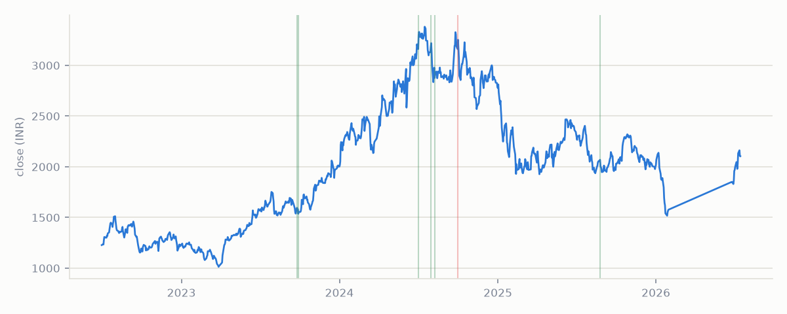

| Date | Direction | Intensity | Novelty |
|---|---|---|---|
| 2025-08-25 | + tone | 75.6th pct | 328 |
| 2024-10-01 | − tone | 27.7th pct | 53 |
| 2024-08-09 | + tone | 41.3th pct | 9 |
| 2024-07-31 | + tone | 51.7th pct | 29 |
| 2024-07-02 | + tone | 51.2th pct | 277 |
| 2023-09-29 | + tone | 82.6th pct | 4 |
| 2023-09-25 | + tone | 96.3th pct | first seen |